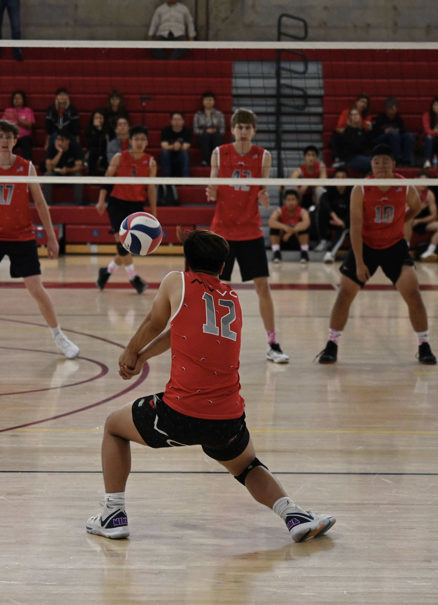
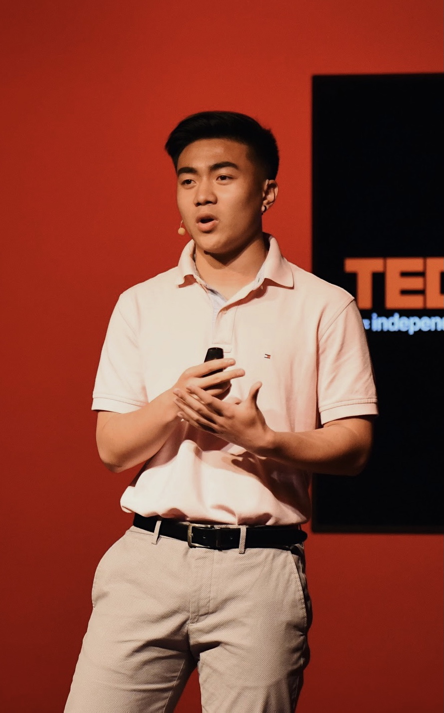
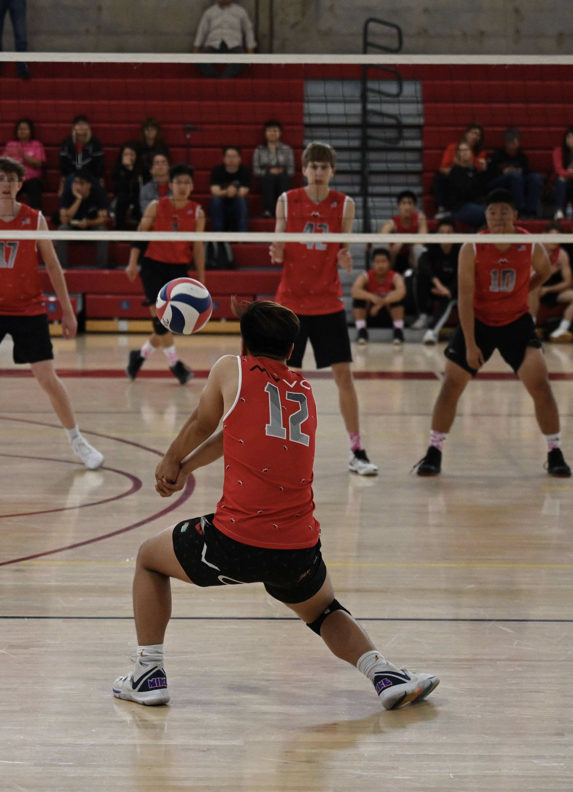
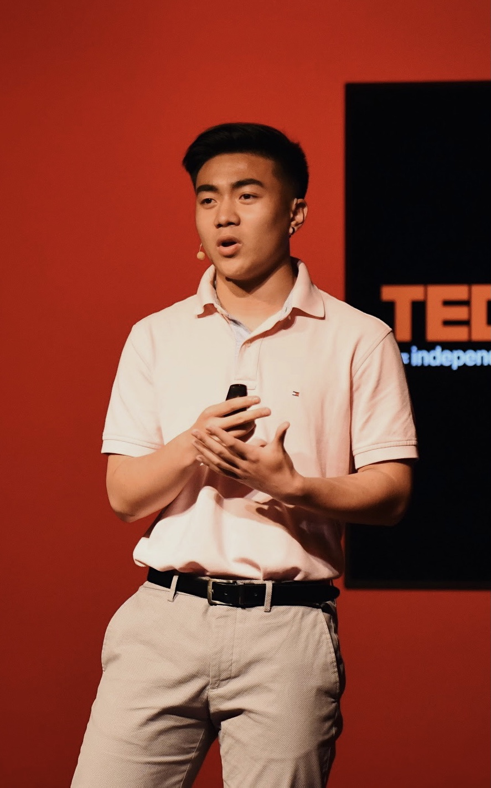

Vincent Mascarenas
Hello everyone. My name is Vincent Mascarenas and I am a first year Psychology student at the University of California, Riverside. My pronouns are he/him/his. In my first year at Riverside, I’ve already done a lot to get involved on campus. Currently, I’m an apprentice for the board of Katipunan, the Filipino Student Organization on campus. As a Katipunan Apprentice, I’ve been able to gain valuable experience shadowing under cabinet members and given the opportunity to contribute and plan events. Being an apprentice has taught me so much about working with others and collaborating for team efforts. Beyond Katipunan, I’ve always had a passion for leading others, being in my high school’s ASB, serving as a Team Captain for my volleyball team, and being a student leader for my school’s Campus Ministry. Although I’m only in my first year here and even though it’s all been virtual, Katipunan has been an outlet for me to find others and have a home away from home. With the little time I’ve been involved, I already know that I want to contribute so much more to this organization. I think I’d be a great fit for the secretary position because of my vast experience in leadership as well as my passion for helping others.
Beyond that, my leadership experience goes back to high school. In high school, I was in student government for two years, serving one year as a class senator and another year as the ASB activities commissioner. I was team captain for my volleyball team, leading my team through adversity. I was in campus ministry, planning school retreats, immersions, masses, and community service events. I was on the executive board for my Filipino Club, planning and implementing the annual Pilipino Cultural Night. With all these leadership experiences, I’ve been able to learn and grow so much that with those experiences, I can take what I’ve learned and apply them to my future endeavors. I believe that I would make a great addition to any company that is willing to hire me
Overall, I’m a very hardworking and patient person that is passionate about growing my skills and getting new opportunities to sharpen myself as a person professionally and personally. I’ve previously held job experience at a boba shop as a barista in which I learned how to work a cash register, work well under pressure, and work quickly and efficiently. I am looking forward to job opportunities in which I can continue to contribute my skill set to as well as sharpen my skills at the same time. I consider myself a people person, and that I work really well in collaborative spaces. I am a patient person, who’s always looking for opportunities to improve upon myself, as well as opportunities to lead and serve others. In the next four years here at UC Riverside, I hope to have contributed to organizations and groups that mean a lot to me, and I hope to have gained some insight on a potential career for myself in the future.
Experience
Barista
• Created drinks for customers
• Cooked food and snacks from the menu
• Delivered excellent customer service at all times
Campus Ministry Leader
• Planned and ran masses
• Led small groups as a retreat leader
• Created promotional content
• Assisted the directors
Education
UC Riverside
Portfolio




 